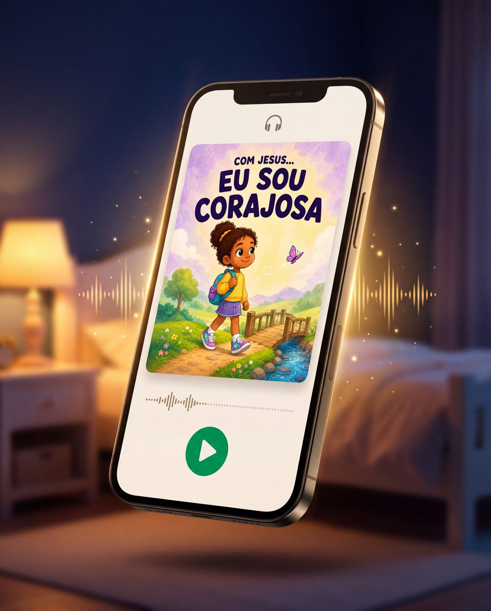

✓ Pagamento confirmado. Seus 11 livros já estão a caminho do seu e-mail.
Não feche esta página. Falta um passo, e ele só aparece uma vez.

E é justamente nas horas em que você mais precisa deles.
Ver amostraVocê já imaginou o momento perfeito: filho no colo, livro aberto, luz do abajur, os dois lendo sobre coragem, gratidão, Jesus. Isso vai acontecer, e vai ser lindo.
Mas seja honesta por dez segundos:
Quantas noites da semana você chega com energia pra isso?
Se for sincera: poucas.
Tem a terça em que o trabalho não acaba, o dia em que ele fica doente, a noite em que você senta na beirada da cama e só quer silêncio.
E tem o "de novo, mãe!" pela quinta vez, quando você ama a história, mas não aguenta ler de novo hoje.
Nessas horas, os livros ficam fechados na estante.
E a lição daquele dia simplesmente não acontece.
Você chega destruída. Não tem voz, não tem colo, não tem paciência.
Do celular sai uma história narrada de verdade, com trilha sonora ao fundo, do jeito que ele adora ouvir. Seu filho deita, escuta, e adormece com Jesus na cabeça.
Você não leu uma palavra. E a lição aconteceu do mesmo jeito.
Quarenta minutos até a casa da avó. Em vez de desenho no tablet, ele passa a viagem inteira ouvindo a história da coragem. Chega perguntando o que quer dizer confiar em Deus.
Ele escuta sozinho no quarto. Dez minutos depois vem até a cozinha te contar o que entendeu.
"De novo!" E dessa vez você pode dizer sim sem hesitar.
Com Jesus Eu Sou Corajosa
Ouça 30 segundos. É só isso que eu peço.
Os livros continuam sendo seus. O áudio é para as horas em que você não pode ser tudo.
Não é a mesma coisa que você acabou de comprar, lida em voz alta. É a coleção inteira transformada em experiência de ouvir.
Narração feita por um contador de histórias de verdade, com trilha sonora e efeitos. Não é leitura de PDF por voz de computador. É aquele tipo de história que a criança escuta de olhos fechados e vê o filme na cabeça.
Cada uma das 11 histórias ganha uma continuação que não existe no livro. O que acontece com o personagem depois. Mais mundo, mais lição, mesmos amigos.
Seis histórias novas com os mesmos personagens, que não estão em nenhum dos 11 livros e não são vendidas em lugar nenhum.
Cada história numa versão mais lenta, voz baixa e música suave, feita para tocar na hora de dormir. Começa a história, ele apaga no meio, e a última coisa que entra na cabeça dele é uma palavra boa.
Somando tudo o que está aqui dentro: 238 €
15 €
39 faixas de áudio, menos de 0,39 € cada.
Pagamento único. Suas para sempre, no celular, sem mensalidade.
Adicionado ao seu pedido em 1 clique.
Você não precisa digitar os dados do cartão de novo.
Não substitui, e nem deveria. Nada substitui a sua voz. Isto é para as horas em que a sua voz não está disponível, e todas as mães têm essas horas.
Áudio é o contrário de tela. Ele escuta de olhos fechados, deitado, imaginando. É a única mídia que faz a criança criar a imagem em vez de receber a imagem pronta.
Os livros são o momento com você. O áudio é o resto da semana. Um não tira nada do outro. Um faz o outro acontecer mais vezes.
No mesmo e-mail dos livros, logo após a confirmação. Você baixa uma vez e escuta no celular, no tablet ou no carro, com ou sem internet.
30 dias
Os mesmos da sua compra. Escute tudo com seu filho. Se não virar parte da rotina de vocês, escreve pra gente e devolvemos os 15 €. Você fica com os livros do mesmo jeito.
Esta oferta aparece uma única vez. Ela existe porque você acabou de levar a coleção. Não está disponível no site nem por este valor em nenhum outro lugar.
↑ Ver a oferta
Produto 100% digital. Nenhum material físico será enviado.
GNM Livros Cristãos Infantis · suporte@pequenoscomjesusofc.com